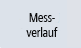
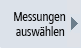
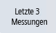

Sie haben die Möglichkeit, den Messverlauf als Messkurve darzustellen.
Voraussetzung
Messverlauf als Messkurve darstellen
 | 1. | Drücken Sie den Softkey "Messergebnis". |
| | | |
|  | 2. | Drücken Sie den Softkey "Messverlauf". Die aktuelle Messung (falls vorhanden) sowie maximal drei zuletzt gespeicherte Messungen (abhängig von der Einstellung in "Messungen auswählen") werden als Messkurve dargestellt. Mithilfe der Zoom-Funktionalität können Sie die Kurvendarstellung vergrößern oder verkleinern. Sie können die Kurvendarstellung auch verschieben. |
|   | 3. | Um zusätzliche Messungen grafisch darzustellen, drücken Sie den Softkey "Messungen auswählen". Wählen Sie die jeweiligen Messungen, die Sie zusätzlich zur aktuellen Messung grafisch darstellen möchten. -ODER- Drücken Sie den Softkey "Letzte 3 Messungen", um die 3 zuletzt gespeicherten Messungen grafisch darstellen zu lassen. In diesem Fall werden 3 farblich unterschiedliche Messkurven zusammen mit der Messzeit dargestellt. |
| | 4. | Drücken Sie den Softkey "Messverlauf" erneut. Alle ausgewählten Messungen werden als Messkurve dargestellt. |